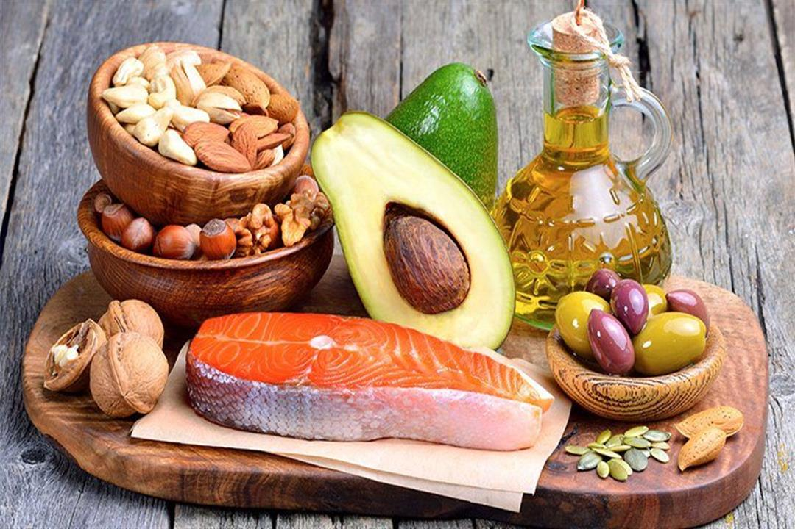
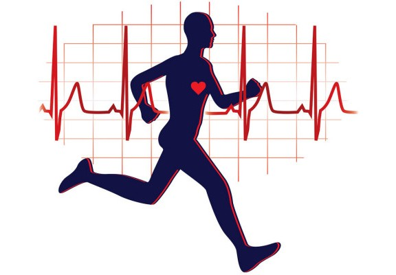

Some habits & tips
Some bad habits and an unhealthy lifestyle affect the health of the heart and blood vessels, and then cardiologists are especially keen to avoid these matters and follow a good lifestyle.Certain types of heart disease, such as heart defects, cannot be prevented. But lifestyle changes that help improve the condition of some patients with heart disease may also help prevent many types of heart disease.These changes include:
- Quit Smoking.
- Maintain normal levels of blood pressure, cholesterol and diabetest.
- Take care to engage in physical activity.
- Ensure a healthy diet.
- Maintain a healthy weight.
Alternative treatments
Donna Arnett, a volunteer expert with the American Heart Association, said that she is keen to eat foods rich in healthy fats, such as nuts, avocados, and fish, because they contain omega-3s that prevent infections that cause heart disease and others, red meat is associated with an increased chance of heart disease, so she advises Arnette, by filling half of the lunch and dinner plate with fresh colored vegetables because they contain antioxidants that protect the heart, take care to avoid completely choosing low-fat products, as those natural fats are replaced by other unhealthy compounds that affect the health of the heart.
There are several methods in alternative medicine that may be useful in lowering cholesterol and in preventing certain types of heart disease, and they include:
- Plantago Oval.
- Coenzyme Q10.
- Flax seed.
- Oats and oat bran.
- Omega-3 fatty acids.
Coffee is important to the heart
Coffee plays a bigger role than it does to start a busy day! It is believed that this warm cup contributes to the total intake of antioxidants to our body, which has been shown to protect against various diseases, including cardiovascular disease. Have you ever thought “that coffee can reduce the risk of heart disease?” This new news remains under investigation through more studies.
Coffee beans are one of the richest food sources with anti-oxidants content. And since coffee is an "important" part of our daily diet, it contributes a high percentage (about 70%) to the total consumption of these elements. Eating the equivalent of 4 cups of coffee a day "provides us with a greater amount of anti-oxidants compared to" other food sources such as tea, fruits, and vegetables.
Both caffeinated and caffeinated coffee provide similar levels of anti-oxidants that help protect against cardiovascular disease.
Quit Smoking
When the body is exposed to the damages of smoking, it begins to repair these damages, including the problem of not distributing oxygen-rich blood to all parts of the body. So, smoking causes an imbalance in transporting oxygen-rich blood to various parts of the body, while the problem of narrowing blood vessels is one of the dangerous phenomena resulting from this imbalance.
Because of smoking, the arteries of the legs and arms shrink, a phenomenon known as: "peripheral vascular disease". This leads to the body's organs not getting the oxygen they need, which causes pain, and even gangrene, which can cause leg amputations.
The category of people most at risk of developing peripheral vascular disease includes many elderly and smokers, who increase their risk of developing this disease or heart disease due to smoking and its damage to the heart.
The importance of cardio physical exercise
Improve physical fitness and ability to withstand exertion.Strengthening the heart muscle.-Reduce weight
-Help lower high blood pressure.
-Reducing harmful cholesterol in the blood.
-Reducing high blood sugar levels.
.-Helping to get away from psychological tension.